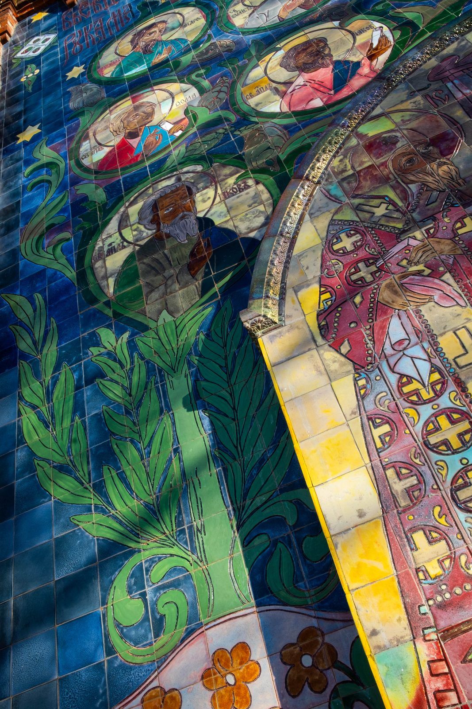

Майоликовое панно Воскресенского храма в Вичуге

Воскресенский храм в Вичуге, исторически — в Тезине, представляет собой крупный памятник абрамцевской архитектурной майолики начала XX века. Его фасады украшали монументальные керамические панно, изготовленные заводом «Абрамцево» по рисункам архитектора И. С. Кузнецова. Западное панно дошло до нашего времени с большими утратами: верхняя часть композиции была уничтожена и заменена живописью, а сохранившиеся нижние фрагменты, включая обрамление портала, были сильно повреждены.
К началу реставрационных работ в 2021 году основная часть композиции с изображениями святых была утрачена. Источниками для её воссоздания стали подлинные фрагменты майолики, фотографии 1910-х годов, материалы частных архивов и обломки исторического декора, найденные при раскрытии основания портала. Художники-реставраторы зафиксировали рисунок и цветовую палитру сохранившейся керамики. Перед демонтажем подлинные плитки промаркировали, чтобы сохранить сведения об их положении в композиции. По натурным и архивным материалам подготовили чертежи, эскизы и прориси фигур и ликов, скопировали сохранившиеся профили колонок и декоративного архивольта.
Для новых деталей были подобраны глины, глазури и режимы обжига. Необходимо было получить материал, пригодный для использования на фасаде, учитывая климатические условия, и передать сложную палитру абрамцевской майолики, включая эффекты восстановительного обжига. После изготовления всех элементов панно собрали и установили на западном портале храма.
До реставрации


В процессе


Результат

